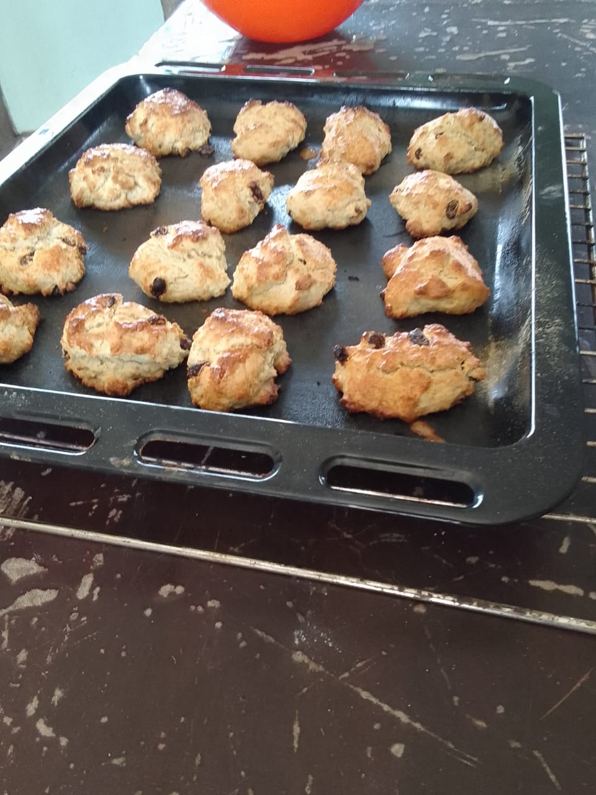

Food and Beverages
We have **equipped facilities** and **qualified personnel** to ensure learners acquire the **right culinary skills**. Our facilities are well maintained, and we provide all the essential equipment for hands-on practice in:
- Cooking
- Serving
- Beverage Making
Examples of Specialties
Muffins
Grilling

Importance of Hygiene
We prioritize **hygiene in our training institution** to ensure a **clean and professional environment**. Proper hygiene not only boosts **food safety** but also enhances professionalism in culinary practice.